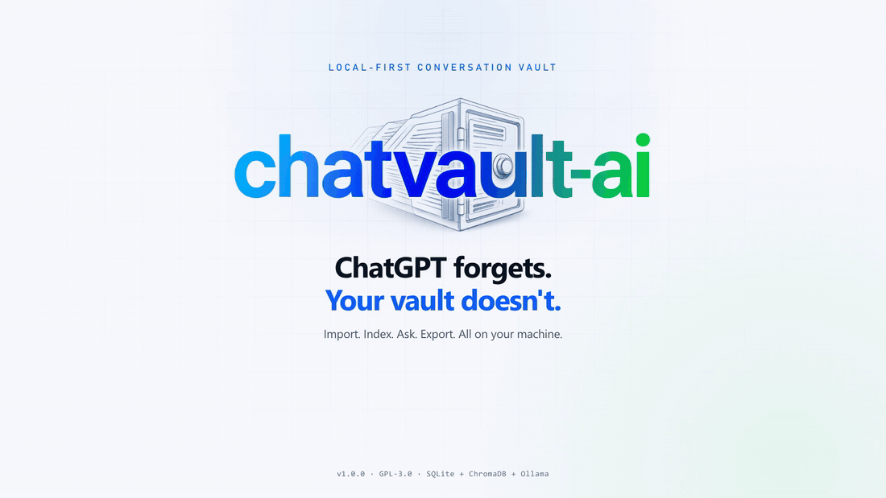

Local-first conversation knowledge base
Your conversations. Your knowledge. Your control.¶
ChatVault AI transforms public ChatGPT conversations into a local, searchable knowledge base with SQLite storage, PDF/DOCX export, Ollama embeddings, and retrieval-augmented chat that cites its sources.

Why ChatVault AI¶
ChatVault AI is built around one rule: SQLite is the source of truth, and the vector index is disposable. Conversations and messages are stored locally in SQLite. The ChromaDB collection can be deleted and rebuilt from SQLite at any time. Chat and embeddings run against a local Ollama instance, so conversation text is not sent to a hosted model.
Import public shares¶
Fetch a public chatgpt.com/share URL, extract the message tree, and store it
locally with duplicate detection.
Export real documents¶
Download a styled PDF or an editable DOCX with headings, lists, tables, quotes, task lists, and fenced code blocks.
Search with embeddings¶
Chunk conversations by message, embed them through Ollama, and query the closest passages with ChromaDB cosine search.
Ask with citations¶
Retrieve context, ask the local chat model, and show the numbered source chunks behind every answer.
Feature status¶
The status column describes the code in the v1.0.0 release. Features marked
API only exist in the backend but do not have a dedicated screen in the React
frontend.
| Capability | Status | Notes |
|---|---|---|
| Public ChatGPT share URL import | Implemented | chatgpt.com/share/<id> only; no login, ZIP upload, or private chats |
| SQLite conversation and message storage | Implemented | Source of truth; duplicate imports return the existing record |
| Conversation library and viewer | Implemented | Title filter, date/message filters, sorting, delete, Markdown transcript |
| PDF and DOCX export | Implemented | Per conversation, from the viewer or API |
| Message-aware chunking | Implemented | Chunks never cross message boundaries |
| Ollama embeddings and ChromaDB index | Implemented | Explicit embeddings only; cosine distance |
| Per-conversation and bulk indexing | Implemented | Synchronous; single process-wide indexing lock |
| Index status, delete, and rebuild | Implemented | Rebuild recreates the ChromaDB collection |
| Semantic search | Implemented | POST /api/v1/search; no dedicated frontend search screen |
| Retrieval-augmented chat | Implemented | Cited sources; no-source path skips the chat model |
| Dashboard and system status | Implemented | SQLite counts, index coverage, Ollama and ChromaDB health |
| Authentication and multi-user access | Not implemented | Single-user local application; bind to loopback |
| Background jobs and streaming | Not implemented | Requests run synchronously; chat is non-streaming |
| ChatGPT data-export ZIP import | Not implemented | Only public share URLs are supported |
| Hosted model providers | Not implemented | Ollama is the only model runtime |
| Automated backup scheduling | Not implemented | Back up storage/chatvault.db manually |
Architecture at a glance¶
flowchart LR
subgraph Browser["Browser"]
UI["React 19 + Vite<br/>Dashboard, Import, Library, Chat, Settings"]
end
subgraph Backend["FastAPI backend"]
API["REST API<br/>/api/v1"]
ING["Ingestion<br/>validate, fetch, extract"]
CHUNK["Chunking<br/>message-aware"]
RAG["Retrieval + prompt<br/>assembly"]
end
subgraph Local["Local storage and runtime"]
SQL[("SQLite<br/>source of truth")]
FILES["storage/generated<br/>PDF and DOCX"]
CHROMA[("ChromaDB<br/>derived vectors")]
OLLAMA["Ollama<br/>embeddings + chat"]
end
SHARE["Public ChatGPT share page"]
UI -->|"JSON over HTTP"| API
API --> ING
ING -->|"HTTPS fetch"| SHARE
ING --> SQL
API --> CHUNK
CHUNK --> OLLAMA
CHUNK --> CHROMA
RAG --> OLLAMA
RAG --> CHROMA
RAG --> SQL
API --> FILESThe backend is the only component that talks to ChatGPT, Ollama, SQLite, and ChromaDB. The browser talks to the backend over JSON and downloads generated documents. See Architecture for component responsibilities and failure boundaries.
Technology stack¶
| Layer | Technology | Role in ChatVault AI |
|---|---|---|
| Frontend | React 19, TypeScript, Vite 8 | Six-page local workspace |
| UI | Tailwind CSS 4, TanStack Query 5, React Router 7 | Layout, data fetching, routing |
| Markdown | react-markdown, remark-gfm, prism-react-renderer | Transcript and answer rendering with code highlighting |
| API | FastAPI, Pydantic v2, Uvicorn | REST endpoints and request validation |
| Database | SQLAlchemy 2, SQLite | Conversations, messages, and index state |
| Ingestion | httpx, BeautifulSoup | Share-page fetching and message extraction |
| Embeddings | Ollama, nomic-embed-text |
Local vector generation |
| Vector store | ChromaDB 1.5.9 | Persistent cosine-distance collection |
| Chat | Ollama, llama3.2:3b |
Local retrieval-augmented generation |
| Documents | ReportLab, python-docx | PDF and DOCX rendering |
| Tests | pytest, oxlint, TypeScript build | Backend contracts and frontend checks |
Run it locally¶
# 1. Install backend and frontend dependencies
make install
# 2. Pull the default local models
ollama pull nomic-embed-text
ollama pull llama3.2:3b
# 3. Start the backend
make run
# 4. In a second terminal, start the frontend
cd frontend && npm run dev
Open http://127.0.0.1:5173. The API and Swagger UI are available at http://127.0.0.1:8000/docs.
The full path, including manual uv and npm commands, is in
Installation. Configuration defaults and
constraints are in Configuration.
Documentation map¶
| Section | Start here |
|---|---|
| Install and configure | Getting Started |
| Use the application | User Guide |
| Set up Ollama and models | Guides |
| Understand the design | Concepts |
| Call the REST API | API Reference |
| Contribute or release | Development |
Contributors¶
ChatVault AI is developed and maintained by the makitdev organization and contributors:
| Contributor | GitHub | Role |
|---|---|---|
| makitdev | @makitdev | Organization / Project Home |
| heyshreee | @heyshreee | Maintainer & Core Developer |
| SriRamFevenz | @SriRamFevenz | Contributor |
| AlwinRiyas | @AlwinRiyas | makitdev Team |
| chandrua138 | @chandrua138 | makitdev Team |
| jawahar-linx30 | @jawahar-linx30 | makitdev Team |
| RVtamilan | @RVtamilan | makitdev Team |
| saranrajbr | @saranrajbr | makitdev Team |
Project links¶
ChatVault AI is licensed under the GNU General Public License v3.0.